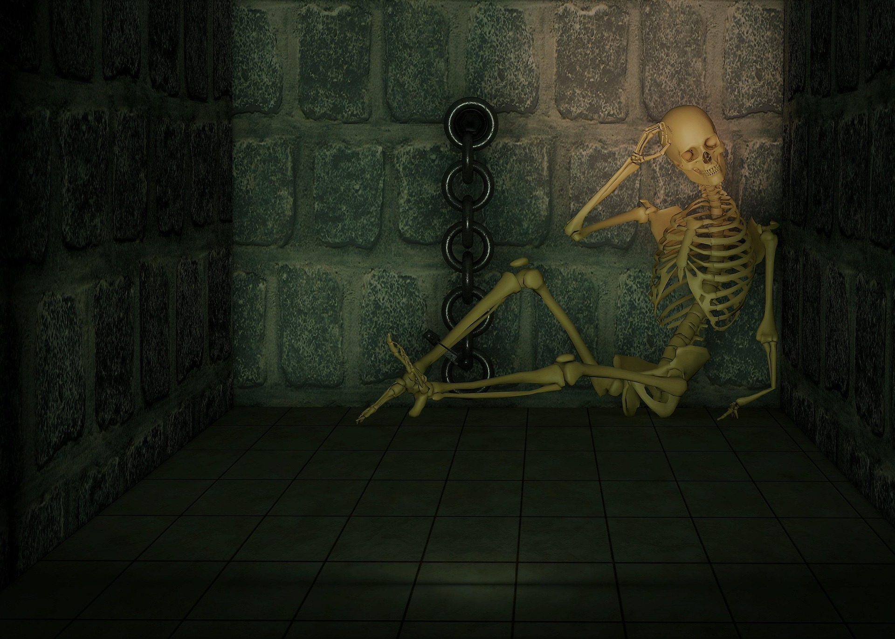

Vous profitez de l'aube pour vous incrustez à l'intérieur du cachot. Cependant, les gardes commencent déjà leur ronde matinale. Un bruit attire leur attention et votre troupe est rapidement découverte. Une scène que les enfants ne pourront jamais oublier.